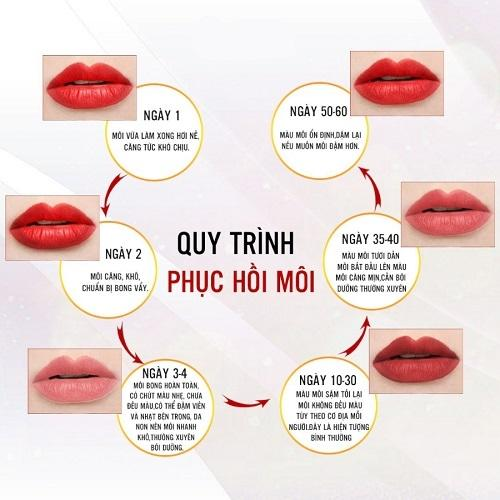

Phun Môi Mấy Ngày Thì Bong? Tiến Trình Hồi Phục Bạn Nên Biết
Sau khi phun môi, hầu hết khách hàng đều mong chờ thời điểm môi bắt đầu bong để quan sát sự thay đổi của màu môi. Vì vậy, từ khóa phun môi mấy ngày thì bong luôn nằm trong nhóm được tìm kiếm nhiều trên Google.
Tuy nhiên, mỗi người có cơ địa và tốc độ hồi phục khác nhau. Có người bong sớm hơn, có người cần nhiều thời gian hơn. Điều quan trọng là bạn hiểu được tiến trình hồi phục bình thường thay vì chỉ so sánh với người khác.
Vì Sao Môi Sẽ Bong Sau Khi Phun?
Sau khi thực hiện, môi bước vào quá trình hồi phục tự nhiên. Lớp bong hình thành là một phần trong quá trình tái tạo của bề mặt môi ở nhiều người.
Quá trình này có thể diễn ra nhanh hoặc chậm tùy theo cơ địa, tình trạng môi trước khi phun, cách chăm sóc và hướng dẫn của kỹ thuật viên.
Phun Môi Mấy Ngày Thì Bong?
Không có một mốc thời gian áp dụng cho tất cả mọi người. Một số khách hàng có thể thấy môi bắt đầu thay đổi sớm, trong khi những người khác cần nhiều thời gian hơn để bước vào giai đoạn bong.
Thay vì chỉ quan tâm đến số ngày, bạn nên theo dõi tình trạng môi mỗi ngày, chăm sóc đúng hướng dẫn, không tự bóc lớp bong và liên hệ kỹ thuật viên nếu có dấu hiệu bất thường.
Tiến Trình Bong Môi Theo Từng Giai Đoạn

Giai Đoạn Đầu
Trong những ngày đầu, môi thường còn nhạy cảm. Bạn nên giữ môi sạch, dưỡng môi đúng hướng dẫn, uống đủ nước và không chạm tay lên môi.
Giai Đoạn Bắt Đầu Bong
Ở nhiều khách hàng, lớp bong sẽ xuất hiện dần. Điều quan trọng là không dùng tay bóc, không cắn môi và không chà xát. Hãy để môi bong tự nhiên.
Giai Đoạn Sau Bong
Sau khi lớp bong tự nhiên hoàn tất, màu môi vẫn có thể tiếp tục ổn định theo thời gian. Bạn nên tiếp tục chăm sóc theo hướng dẫn của kỹ thuật viên.
Ngoài tay nghề kỹ thuật viên, cách chăm sóc sau phun cũng góp phần quan trọng vào quá trình hồi phục của môi. ELLY PMU có hỗ trợ làm tận nhà theo lịch hẹn và hướng dẫn chăm sóc chi tiết sau khi thực hiện.
Những Yếu Tố Ảnh Hưởng Đến Quá Trình Bong
Cơ Địa
Tốc độ hồi phục sẽ khác nhau ở mỗi người. Vì vậy, không nên quá lo lắng nếu môi của bạn không bong giống người khác.
Chăm Sóc Sau Phun
Việc dưỡng môi và giữ vệ sinh đúng cách góp phần hỗ trợ quá trình hồi phục.
Tác Động Lên Môi
Các hành động như bóc lớp bong, chà xát hoặc cắn môi có thể ảnh hưởng đến quá trình hồi phục.
Tay Nghề Kỹ Thuật Viên
Quy trình thực hiện và hướng dẫn chăm sóc cũng là những yếu tố quan trọng giúp môi hồi phục thuận lợi hơn.
Những Sai Lầm Khi Môi Đang Bong
Tự Bóc Lớp Bong
Đây là sai lầm phổ biến nhất. Bạn nên để lớp bong diễn ra tự nhiên theo hướng dẫn của kỹ thuật viên.
So Sánh Với Người Khác
Không phải ai cũng có tốc độ hồi phục giống nhau. Việc so sánh quá nhiều có thể khiến bạn lo lắng không cần thiết.
Quá Lo Lắng Khi Môi Chưa Lên Màu Ngay
Màu môi có thể tiếp tục thay đổi và ổn định theo từng giai đoạn hồi phục.
Checklist Trong Giai Đoạn Bong
Câu Hỏi Thường Gặp
Phun môi mấy ngày thì bong?
Thời gian bong khác nhau ở mỗi người và phụ thuộc vào cơ địa, cách chăm sóc cũng như quá trình hồi phục thực tế.
Môi chưa bong có bình thường không?
Mỗi người có tốc độ hồi phục khác nhau. Nếu bạn lo lắng, hãy liên hệ cơ sở thực hiện để được kiểm tra.
Bong chậm có ảnh hưởng đến màu môi không?
Không thể kết luận chỉ dựa trên tốc độ bong. Bạn nên tiếp tục chăm sóc đúng hướng dẫn và theo dõi quá trình hồi phục.
Có nên tự bóc lớp bong không?
Không nên. Việc bóc lớp bong có thể làm môi nhạy cảm hơn và ảnh hưởng đến quá trình hồi phục tự nhiên.
Đừng quá sốt ruột nếu môi chưa bong như mong đợi. Điều quan trọng là kiên nhẫn, chăm sóc đúng cách và trao đổi với kỹ thuật viên khi cần thiết.
Kết Luận
Phun môi mấy ngày thì bong là câu hỏi được rất nhiều người quan tâm trước và sau khi thực hiện dịch vụ. Thay vì chỉ tập trung vào một mốc thời gian cụ thể, bạn nên theo dõi quá trình hồi phục của môi, chăm sóc đúng hướng dẫn và kiên nhẫn để môi ổn định tự nhiên theo cơ địa của mình.